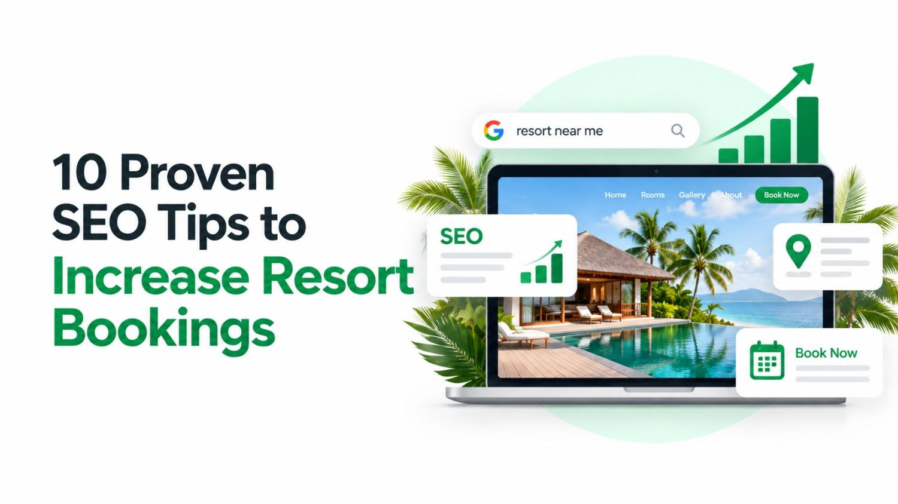

Here is the truth most resort owners in Kerala don't want to hear: every direct booking you lose to Booking.com, MakeMyTrip, or Expedia costs you 15–25% in commission before you even open your doors for the guest. For a resort earning ₹50 lakhs a year in OTA bookings, that is ₹7.5–12.5 lakhs leaving your business annually - not to competitors, but to middlemen.
The resorts quietly breaking free from this dependency are not running bigger ad budgets. They are investing in SEO for hotels - building organic visibility that places their website directly in front of travellers at the exact moment they decide where to stay in Kerala.
Kerala Tourism attracts millions of domestic and international visitors every year, searching for everything from houseboat stays in Alleppey to luxury jungle resorts in Wayanad and beachfront retreats in Varkala. The question is simple: when those travellers search, does your resort appear - or does Booking.com take the booking and the commission?
These 10 proven SEO tips are built specifically for Kerala resorts that are ready to own their search visibility, reduce OTA dependency, and turn organic traffic into direct revenue.
25%
Average OTA commission per booking
68%
of travellers research hotels on Google before booking
3.2x
More revenue from direct bookings vs OTA bookings
#1
Google result captures over 31% of all search clicks
Your Google Business Profile (GBP) is the single most important free SEO asset a Kerala resort can own. When a traveller searches "resort in Munnar" or "backwater stay near Alleppey," Google's local pack - the map results with three businesses - appears above all organic listings. If your profile is incomplete or unoptimised, you simply do not appear there.
- Complete every field: business name, category (set as "Resort" or "Hotel"), address, phone, website, and check-in/check-out hours
- Upload 30+ high-quality photos: rooms, pool, property exterior, dining, views, and experiences
- Post weekly updates - seasonal offers, festivals, packages - to signal an active, relevant business to Google
- Respond to every review publicly, within 48 hours, using destination keywords naturally in your replies
- Enable the "Book" button through Google's hotel integration or link directly to your booking page
Kerala Context
A houseboat resort in Alleppey that adds "private houseboat stay Alleppey with sunset views" to its GBP description and uploads authentic photos of the backwaters consistently outranks larger chains with neglected profiles.
Most resort websites chase broad terms like "resort in Kerala" - phrases dominated by OTAs with enormous domain authority. The smarter strategy is targeting long-tail, high-intent keywords that signal a traveller is close to booking. These phrases have lower competition, higher conversion rates, and are far more winnable for independent resorts.
- Use Google Keyword Planner and Google Search Console to identify what searches your website already receives
- Build dedicated landing pages for each keyword cluster: "honeymoon resorts in Munnar," "family resorts in Thekkady with pool," "beachfront resort in Varkala budget"
- Include price anchors and experience descriptors in your target keywords - travellers searching these are ready to book
- Map one primary keyword per page - do not target the same keyword across multiple pages
High-Intent Keywords Worth Targeting
"best resort in Munnar for honeymoon" · "luxury treehouse resort Wayanad" · "private pool villa Kovalam" · "Alleppey houseboat package with meals" · "Thekkady jungle resort family" - each of these signals an imminent booking decision.
Travellers do not just search for hotels - they search for destinations. A content strategy built around the experiences, attractions, and questions surrounding your location captures travellers early in their planning journey and positions your resort as the natural place to stay. This is destination SEO content done right.
- Write guides like "Best Things to Do in Munnar in December" or "Alleppey Backwater Tour: Complete Guide for First-Time Visitors"
- Create seasonal content targeting peak Kerala travel windows - December–February for international tourists, April–June for domestic families
- Answer common questions: "Is Munnar safe in monsoon?" "How to get from Kochi to Thekkady?" - these capture long-tail search traffic at scale
- End every content piece with a soft CTA linking to your booking page or relevant room category
Real Strategy
A Thekkady jungle resort publishing "7 Wildlife Experiences You Can Only Have in Periyar" will capture travellers researching the destination and when they are ready to book, the resort they've been reading about is the natural first choice.
Backlinks - links from other websites pointing to yours - remain one of Google's strongest ranking signals. For Kerala resorts, travel backlinks from relevant, authoritative sources carry particular weight. A link from a respected travel blog reviewing your resort tells Google that real people vouch for your property.
- Invite travel bloggers and content creators covering Kerala to experience your property in exchange for honest coverage and a backlink
- Get listed and linked from Kerala Tourism's partner directories and destination guides
- Submit your resort to curated travel publications like Lonely Planet's India pages and Times Travel
- Build relationships with local wedding planners, tour operators, and travel agencies - their websites often link to preferred accommodation partners
- Create link-worthy assets: infographics about Munnar's tea history, photo essays of Alleppey sunsets, or data-led posts about the best time to visit each Kerala destination
Want an SEO Strategy Built for Your Resort?
Bamboost specialises in hotel SEO services for Kerala's hospitality industry - from local SEO to content strategy and technical audits.
View Hotel SEO Services →
Over 80% of hotel searches in India happen on mobile devices. If your resort's website loads slowly or displays poorly on a smartphone, you are losing both visitors and rankings. Google's Core Web Vitals - a set of real-world performance metrics - directly influence your search position. A slow website is not just a bad user experience; it is an active SEO penalty.
- Target a Largest Contentful Paint (LCP) under 2.5 seconds and a Cumulative Layout Shift (CLS) score below 0.1
- Compress all images to WebP format without sacrificing visual quality - property photos are often the biggest page-weight offenders
- Use a fast, mobile-first hotel website theme and remove unnecessary plugins or scripts
- Enable browser caching, use a CDN, and minify CSS and JavaScript files
- Test your site regularly using Google Search Console's Core Web Vitals report
Important Reference
Follow
Google's official Search documentation to understand exactly how Core Web Vitals and page experience signals affect your hotel website's ranking in search results.
Schema markup is structured data code you add to your website that helps Google understand your content deeply and display it more prominently in search results. For resorts, the right schema can trigger star ratings, price ranges, check-in information, and review counts directly in the search listing, dramatically increasing click-through rates without improving rank position.
- Implement
Hotel and LodgingBusiness schema on your homepage and room pages
- Add
Review and AggregateRating schema to display star ratings in search results
- Use
FAQPage schema on destination content pages to capture featured snippet positions
- Add
BreadcrumbList schema to improve site navigation signals in search
- Validate all schema using Google's Rich Results Test tool before publishing
Implementing schema correctly is part of comprehensive technical SEO optimization - it requires both coding precision and strategic judgment about which schema types deliver the highest impact for your specific pages.
If your website does not have a compelling, SEO-optimised page specifically designed to convert visitors into direct bookings, you are sending warm traffic to OTAs by default. A direct booking page is not just a booking widget - it is a conversion-optimised landing page that gives travellers a compelling reason to book with you rather than returning to Booking.com.
- Headline the page with a clear direct booking advantage: "Book Direct - Best Rate Guaranteed + Free Airport Transfer"
- List exclusive direct booking benefits: complimentary breakfast, early check-in, room upgrades, or flexible cancellation
- Include genuine guest testimonials with photos on this page - social proof at the point of conversion is powerful
- Optimise the page for keywords like "book [your resort name] direct" and "[destination] resort best rate"
- Make the booking form or widget fast, mobile-friendly, and visible without scrolling on every device
Reviews on Google Business Profile, TripAdvisor, and your own website are not just trust signals for potential guests - they are active SEO ranking factors. Google uses review quantity, recency, and sentiment to assess local business authority. Resorts with consistent, recent, keyword-rich reviews rank higher in local search results than those with stale or sparse feedback.
- Send automated post-stay emails to every guest requesting a Google review - timing matters, send within 24 hours of checkout
- Train your front desk staff to mention Google reviews at checkout as a natural part of the farewell
- Respond to every review - positive and negative - using destination and experience keywords naturally: "We're thrilled you loved the Munnar sunrise from our infinity pool..."
- Embed your Google and TripAdvisor review widgets prominently on your homepage and booking page
- Never purchase fake reviews - a single penalty from Google can erase years of SEO progress
Resort websites are image-heavy by nature - beautiful property photography is essential for conversions. But unoptimised images are one of the most common causes of slow loading speeds and missed SEO opportunities. Hotel website optimisation must include image SEO as a non-negotiable element.
- Rename image files descriptively before upload:
munnar-resort-infinity-pool-view.webp instead of IMG_4872.jpg
- Write descriptive ALT text for every image: "Luxury infinity pool overlooking Munnar tea gardens at sunrise" - this contributes to both accessibility and image search ranking
- Compress all images to WebP format targeting under 200KB per image without visible quality loss
- Use lazy loading so off-screen images don't delay initial page rendering
- Add relevant images to your Google Business Profile regularly - GBP photos rank in Google Images searches for your property
Internal linking - connecting your own pages to each other with descriptive anchor text - is one of the most underutilised SEO tools in hospitality digital marketing. It helps Google understand the structure and priority of your website's content, passes authority from high-traffic pages to booking pages, and keeps visitors exploring your site longer.
- Link from every destination blog post to the most relevant room category or package booking page
- Create a "Experiences" or "Explore [Destination]" page that links to all your destination content - this becomes an SEO hub page
- Use descriptive anchor text in all internal links: "our private pool villas in Munnar" rather than "click here"
- Add contextual links from high-authority pages (your homepage, most-visited blog posts) to your direct booking page
- Audit internal links quarterly using Google Search Console to find orphaned pages - pages with no inbound internal links that cannot be discovered by search engines
If you want all ten of these strategies implemented professionally, Bamboost's professional hotel SEO services are built specifically for the Kerala hospitality market - covering local SEO, on-page optimisation, technical health, and content strategy under one managed service.
Common SEO Mistakes Kerala Resorts Make
Avoiding mistakes is just as important as implementing best practices. Here are the most damaging SEO errors we consistently see across Kerala's hospitality properties:
Relying entirely on OTA listings with no investment in organic search - this is the single most expensive long-term mistake a resort can make.
Having a beautiful website that loads in 8+ seconds - every second of loading delay reduces booking conversions by approximately 7%.
Using the same title tag and meta description on every page - duplicate metadata confuses Google and reduces click-through rates from search results.
Ignoring Google Business Profile after initial setup - an unmaintained profile loses local ranking positions to actively managed competitors.
Publishing generic content - "Welcome to our beautiful resort" copy that could belong to any hotel anywhere adds no SEO value and attracts no organic traffic.
Having no schema markup - missing out on rich results means lower click-through rates even when you do rank on page one.
How SEO Reduces OTA Commission Dependency
The Cost of OTA Dependency
A resort paying 20% commission to OTAs on ₹1 crore in annual revenue loses ₹20 lakhs before covering a single operational cost. A well-executed SEO strategy can shift 40–60% of those bookings to direct channels within 12–18 months - recapturing ₹8–12 lakhs annually.
SEO reduces OTA dependency through a straightforward mechanism: when your resort ranks organically for the keywords your potential guests are searching, those guests find your website directly and book directly. No intermediary. No commission.
Organic rankings deliver free, recurring traffic - unlike paid OTA listings that stop the moment you stop paying
A strong Google Business Profile captures local search traffic that OTAs cannot intercept
Destination content attracts travellers before they even open a booking platform - your resort is already their plan
Direct booking page incentives convert organic visitors at rates that compete with OTA convenience
The goal is not to abandon OTAs entirely - they serve a distribution purpose. The goal is to reduce your OTA dependency from 70–80% of bookings to 30–40%, dramatically improving your revenue per booking and giving you greater control over your guest relationships.
Building a complete hotel SEO strategy - from keyword research and on-page optimisation to technical audits and content creation - requires coordinated expertise. Explore our professional hotel SEO services and technical SEO optimization designed specifically for Kerala's hospitality sector.
Frequently Asked Questions
Does SEO really work for small resorts in Kerala?
Yes. Even small boutique resorts can outrank large OTAs for long-tail, destination-specific keywords. A resort in Wayanad targeting "private pool resort in Wayanad under ₹5000" can dominate that niche and drive direct bookings that OTAs cannot intercept.
How long does hotel SEO take to show results?
Most Kerala resorts see meaningful ranking improvements within 3–6 months of consistent SEO work. Google Business Profile and local SEO improvements can show impact even faster - sometimes within weeks of optimisation.
What is the most important SEO strategy for Kerala resorts?
Optimising your Google Business Profile combined with destination-based content creation is the highest-impact combination. These two strategies directly address local search intent and capture travellers who are actively planning their Kerala trip.
Can SEO reduce my OTA commission costs?
Absolutely. When your resort ranks organically for high-intent keywords, travellers find your website directly and book without passing through Booking.com or MakeMyTrip - meaning you pay zero commission on those bookings. Over time, SEO is the most cost-effective customer acquisition channel available to hotels.
Do I need a big budget for hotel SEO in India?
No. A focused, well-structured SEO strategy does not require a large budget - it requires the right expertise. Many Kerala resorts achieve significant ranking improvements and direct booking growth with a modest monthly SEO investment that is a fraction of their annual OTA commission spend.
Bamboost Editorial Team
Hospitality SEO Specialists & Kerala Digital Marketing Experts